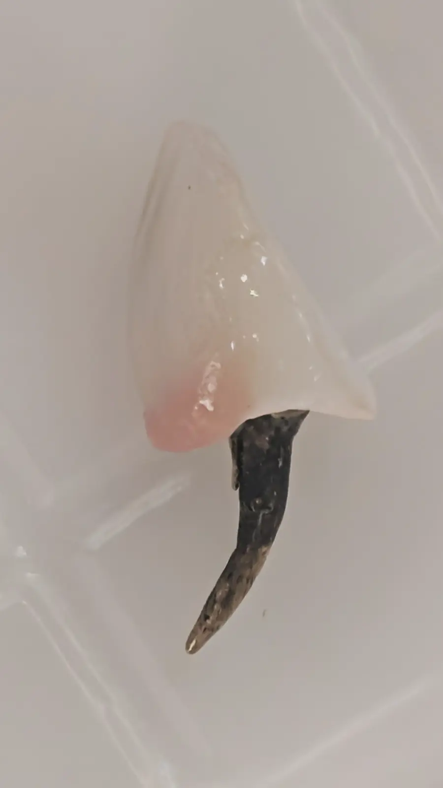
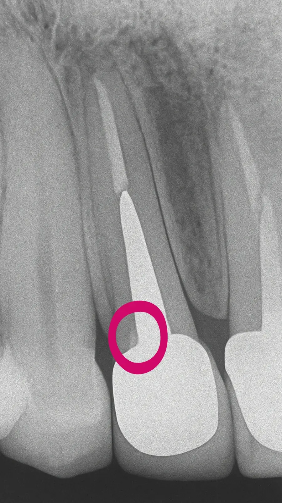

نسخه استخراجشده؛ ترجمه یا تأیید علمی انجام نشده است. وضعیت: captured
بیمار با روکش خارجشده مراجعه کرده است. روکش همراه پست از کانال بیرون آمده؛ پست از جنس NPG است و خم شده. مشکل از کجا شروع شده است؟

در نگاه اول میشود به عوامل مختلفی فکر کرد: طول پست، ضخامت پست، کیفیت سمان یا نیروهای اکلوزالی. اما نشانهی اصلی جای دیگری است.
پستی که خم میشود معمولاً در حال تحمل نیرویی است که اساساً نباید به آن منتقل شود. در دندانی که فرول مناسب دارد، نیروهای عملکردی در دیوارههای عاجی باقیماندهی تاج پخش میشوند و پست بیشتر نقش نگهدارندهی کور را دارد، نه ستون تحملکنندهی بار. وقتی فرول نیست، این تعادل از بین میرود: نیرو مستقیماً به پست میرسد و سازه وارد فاز شکست میشود.
خم شدن پست و شکستن ریشه دو روی یک مشکلاند: نبود فرول. جنس پست فقط شکل شکست را تعیین میکند.
پرسیدن زمان انجام درمان قبلی به درک این مسیر کمک میکند، ولی در این مرحله معمولاً تغییری در سرنوشت درمان نمیدهد: این دندان پروگنوز خوبی ندارد. کنار یونیت، گاهی یک پست خمشده بهوضوح نشان میدهد مشکل از کجا شروع شده است.
دندان قدامی درمانشدهی اندو را برای پست و کور آماده کردهای. پس از تراش، یکی از دیوارهها نازک و کاسهمانند باقی مانده است. با این دیواره چه میکنی؟

طبق اصول کلاسیک پروتز، چنین دیوارهای نمیتواند فرول مؤثر ایجاد کند، چون ضخامت کمتر از یک میلیمتر در برابر نیروهای کششی و خمشی دوام کافی ندارد. از طرف دیگر، کوتاه کردن یا حذف این دیواره برای تأمین ضخامت، در ناحیهی قدامی باعث افت زیبایی و کاهش طول کلینیکی میشود. دندان میان دو انتخاب دشوار میماند: حفظ نسج یا تأمین فرول.
هدف ترمیم فقط جایگزینی بافت ازدسترفته نیست، بلکه بازگرداندن رفتار طبیعی دندان است؛ مادهی ترمیمی و نسج باقیمانده باید مثل یک واحد هماهنگ عمل کنند. وقتی اصول باندینگ رعایت شود، اتصال کامپوزیت و نسج دندانی به استحکامی میرسد که از نظر عملکرد مکانیکی تقریباً مشابه خود دندان است. ترمیم دیگر جسمی چسبیده بر دندان نیست، بلکه ادامهی طبیعی ساختار آن است.
این رویکرد ترکیبی از اصول محافظهکارانه و عملکرد مکانیکی مؤثر بود، تا در نهایت پست و کور نهایی بر پایهای مستحکم و هماهنگ با اطمینان اجرا شود.